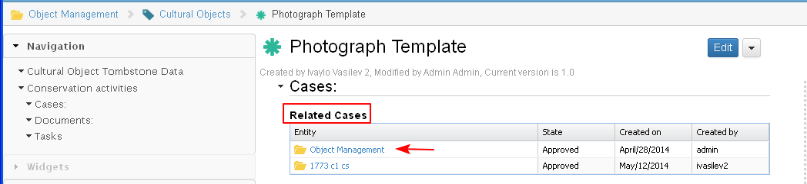

- An object could be attached (associated) to a Project from:
- Project dashboard/ 'Projects Objects' Dashlet/ Attach Object action
Main Menu/ Project Library/Objects Repository/ Attach Object action (Not Ready)
- An object could be attached (associated) to a Case from:
- Case Dashboard/ Objects Tab/ Attach Object action
- The user selects the action "Attach Object" (1-2-3).

- The system opens the search screen, where the user is restricted to search only for business domain objects in the objects repository (1-2-3).
The user could select and attach one or more objects at the same time (group of objects).

- The selected object is attached to the case.

- A link is created between the object and the case. The information about this link is displayed in the Object landing page/ Related Cases.
